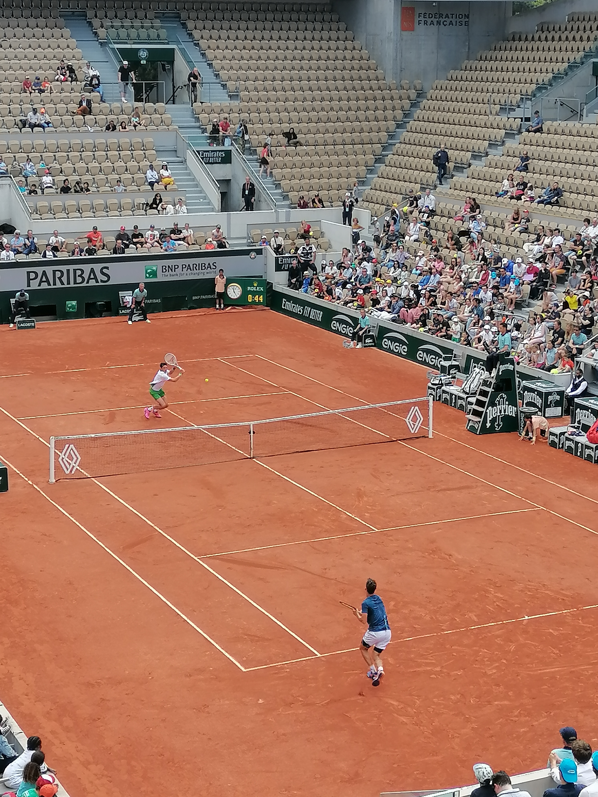

01 / The game
About tennis
Tennis is a racket sport played by two players (singles) or two teams of two players (doubles) on a court divided by a net. Players use a racket to hit a felt-covered rubber ball over the net into the opponent's court. The goal is to land the ball so the opponent cannot return it properly.
I have been playing this sport since I was 6. It has taught me many things: never give up, keep improving and be proud of my progress.
Explore my gallery
02 / A memory
A day at Roland-Garros
This photograph was taken during a match on the Philippe-Chatrier court, featuring two French players.